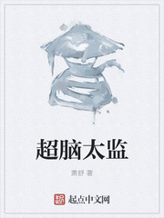
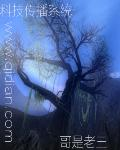

返回
首页
分类
排行
全本
阅读记录
书架
修真小说
修仙路人君
作者：来不及忧伤
更新至：
第484章 那死没良心的总算是来了！
简介：
重生在到处是妖魔鬼怪的修仙世界，见天才大师兄因为太过优秀而受奸人所害，从云端跌落凡尘，君不弃默默做了个决定——从此当个修仙路上平平无奇的路人君！
白首妖师
作者：黑山老鬼
更新至：
第四百二十六章 要么慢走，要么……
简介：
穷凶极恶，泯灭人性者，唤作“人魈”！世故圆滑，深谙人情者，唤作“人精！”凶神恶煞，杀人如麻者，唤作“人屠！”那么，行事波云诡谲，多智如妖者，便唤作……

超脑太监
作者：萧舒
更新至：
第1294章 得法（一更）
简介：
意外重生，竟然重生到被发配到孝陵的小太监身上，身体残缺，身处险境。却发现带着前世超脑，在这个武学昌盛，教派林立的异世界里，提升武道，补全身体，执掌权柄。暗入教派，覆灭魔教，操纵武林；进王府助夺嫡，助公主成就女皇，一统天下，武镇世间。
茅屋之中有洞天
作者：雪满林中
更新至：
第一百四十五章 一视同仁
简介：
洞里乾坤大，壶中日月长。千年前，一个进京赶考的书生在雨夜躲入荒野茅屋，进入仙人洞天，从而开创了茅屋一派。千年后，灵气消散，洞天衰败。茅屋派也已经衰落到了极点。直到有一天，一切开始发生转机！
王者风暴
作者：古剑锋
更新至：
第2532章 重整旗鼓
简介：
修仙觅长生，热血任逍遥，踏莲曳波涤剑骨，凭虚御风塑圣魂！
我真的只会背道德经
作者：不知渭河
更新至：
第一百三十九章 矫枉过正的决定
简介：
百家尊以道为首，道家不管不问候佛珠入世惹尘埃，一粒便封万户侯沉寂许久的诸子百家因一粒佛珠起了争执唯独一无所知的苏浩捡到佛珠后只能高呼“劳资只会背书啊！”------------------本书稳定【日更4000】，中午晚上各一章，有170万完本老书，更新保证，新书期欢迎投资。希望各位老板多多跟读，新书不易，有任何意见欢迎指正
修命者开局寿元百万年
作者：无境界
更新至：
五十五章 那一刻大家都忙
简介：
别人修仙我修命，学法得宝有窍门。独坐蜃城如龙盘，吞日吐月养精神。世途险恶道多阻，我擅法身不留痕。行那万物归一法，成就大道逍遥人。
仗剑江湖
作者：骑驴上仙山
更新至：
第四百三十七章 卫家的大义
简介：
乘风亦乘酒，只做长安不醉人。徐江南后来说，江湖很大，大到天下难容，江湖又很小，小到人心可装。斗胆请客官们温酒，听小人一场醒木，说一段江湖如画。
觅仙道
作者：幻雨
更新至：
第1343章 一个传说中的笑话
简介：
王侯将相宁有种，寒门亦自把仙修。千难万险皆不怕，万丈红尘炼道心。世人皆道长生好，历经百劫始成仙。这是一个出身寒门的少年立志修仙的故事。
天行缘记
作者：楚枫楠
更新至：
第两千一百二十八章 围堵 二
简介：
修仙觅长生，热血任逍遥，踏莲曳波涤剑骨，凭虚御风塑圣魂！
仙狱问道
作者：秋枫晚红
更新至：
第一千四百九十五章 一乱生，百乱起
简介：
修仙觅长生，热血任逍遥，踏莲曳波涤剑骨，凭虚御风塑圣魂！
大道惊仙
作者：浮沉
更新至：
第0336章 重华帝尊的惊震
简介：
这是陆离的二次魂穿，惨的是由仙入凡。长生之路、惊仙之道，在脚下铺开。道似无情却有情，天似有情实无情！一个修仙少年，一柄惊仙之剑，带你走入一卷传奇仙史！
神霄东来
作者：步蟾宫
更新至：
第二一四章 奇异石灵 剑光追击
简介：
天外神霄客，万界逐星流，紫气东来时，世宇别春秋。
仙宫
作者：打眼
更新至：
第一千五百七十五章 敬我为神
简介：
天书封神榜,地书山海经,人书生死簿！九天之上，是为仙宫！

科技传播系统
作者：哥是老三
更新至：
第一千七百零一章 气血与真元
简介：
“系统扫描中，程序加载中，发现未知能量体系，发现先进人体改造技术，正在深度扫描，系统分析中......” “发现宿主人体基因缺陷，未知原因导致宿主五行失衡，宿主脑域开发过低，是否增大脑域开发度,是否补全五行？” 作者建了个群群号576530343
我比天高
作者：银色纪念币
更新至：
第一百一十九章 道貌岸然贪生怕死
简介：
童子问：夫子，何为高人？夫子答：很高的人。童子又问：与天齐高？夫子笑答：比天还高。童子好奇再问：如何才能比天还高？夫子朗声答：如我一般，志比天高，命比天高，道比天高……童子不耐烦打断道：懂了懂了，我早就说夫子你三高嘛，你还不认，以后还是要少吃多动才好。夫子大怒：三日不打，上房揭瓦，我戒尺呢，我大锤呢，拿我方天画戟来！
仙韵传
作者：沁园居士
更新至：
第三千四百七十一章 一片草原蕴含的道意
简介：
异界有三千大道，十万中道，百万小道，李运的梦想是悟道成仙，笑傲星际，成就至尊星主霸业，不过，此刻他仍躲在草从中，紧缩着身子，原来，他早已被眼前发生的这一幕完全镇住了，看得如痴如醉，迟迟未能清醒反应过来。 他心中只有一个声音：“筑基者！筑基者！我一定要成为这样的筑基者！” ……
盖世群英
作者：朱雀桥边野草
更新至：
第一千一百九十五章 直面本源
简介：
平凡少年苏傲天，有缘踏上修仙之路，历经种种艰难险阻，打破桎梏，推翻不平等的修仙潜规则，踏上绝世强者之路。
千机殿
作者：缘分0
更新至：
第四十九章 三嫁
简介：
为报灭门之仇，宁夜忍辱负重，投身仇家门派，与敌方展开一系列精彩绝伦的高智商争夺赛，复仇的帷幕已然拉开，智勇双全的宁夜究竟能否替师报仇，替同门雪恨，尽在《千机殿》。
从灵气复苏到末法时代
作者：叶恨水
更新至：
第958章 回归
简介：
身在灵气复苏的武道时代，却拥有了去往修仙世界的能力！苦于没有习武资质的方正表示……不练武了。我修仙！！！什么？修仙世界已近末法，灵气稀缺？天材地宝匮乏？能自如穿梭两界的方正表示，我们这旮沓刚灵气复苏，一切都不是问题。反派：救命，有人作弊啊，修仙的欺负我们练武的，还有没有天理了？PS:已有精品作品《无限之配角的逆袭》、《万界淘宝商》、《无限气运主宰》、《正版修仙》，老作者值得信赖
首页
上页
下页
尾页
输入页数
(第2/10页)当前20条/页